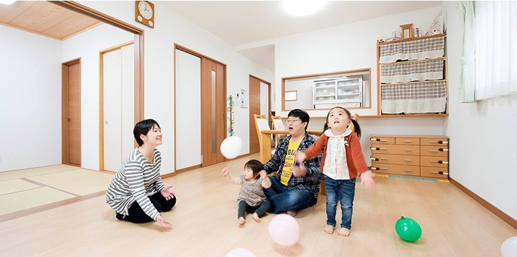

玄関ドアを開けると、広々として奥行きのあるホールが。M様ご夫妻は「ようこそ！」と朗らかな笑顔で迎えてくれました。
「玄関とホールは合わせて6畳ほどあります。〝玄関は主の顔〟と言われるので、ゆったりと落ち着きある空間にしました」—— 奥様
そしてもう一つ、と奥様はリビングへ導きながら話を続けます。
「ホールからリビング、和室、洗面所にそれぞれ直接行けるようにしました。共働きなこともあって、家事をするのに効率が良い回遊式動線にしてもらったんです」—— 奥様
和室とリビングは引き戸を開ければワンフロアとしても使え、洗面所にはキッチンからも入れます。この家事動線が、奥様のいちばんのこだわりでした。

引き戸を開ければ、和室もリビングもひとつづきに。
一方、ご主人が希望したのは2階ホールの造り付けの本棚。お子様たちが大きくなったら共有する予定だそうです。
「家族の空間を大切にした家づくりを心がけました。今は2部屋をつなげている子供部屋も、本来は5畳と4.5畳。寝るだけの場所として広くしませんでした。回遊式の1階は逆に一体感ある間取り。成長しても一緒に過ごしてくれたらと思っています」—— ご主人
もともとは新築マンションに住んでいたM様ご家族。家を建てようと思ったのも、お子様の環境を考えてのことでした。
「マンションの住み心地も悪くなかったんですが、子供が遊べる公園が近くにありませんでした。戸建てなら車の往来などの心配もなく、庭で遊ばせることができると思って買い替えることにしたんです」
そう話すご夫妻の思いを後押ししたのが、たまたま立ち寄った完成見学会での親身な対応と、わかりやすい資金計画の説明でした。
「子供をあやしてくれるので、打ち合わせもスムーズ。何より、私たちの仕事内容やライフスタイル、趣味、予算とあらゆることを聞いたうえで、必要なものと不要なものを指摘してくれるのが助かりましたね」